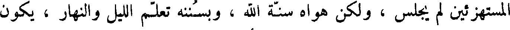
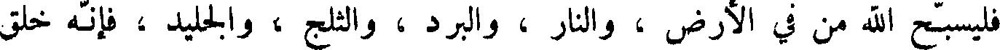
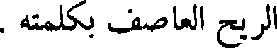
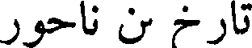
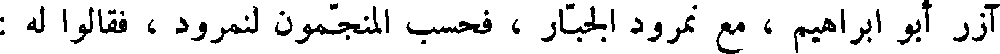
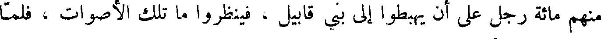
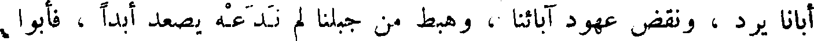
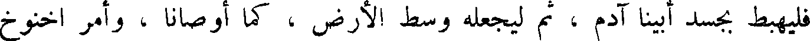
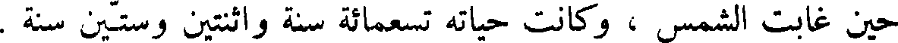

File: 000750.gt.txt (if the image is defective, simply delete all Arabic text and the line will be excluded)

إذا قرأ الزبور قال : طوبى لرجل ...1 في سبيل الأثمة لم يسلك ، وفي مجالس
File: 000751.gt.txt (if the image is defective, simply delete all Arabic text and the line will be excluded)

المستهزئين لم يجلس ، ولكن هواه سنة الله ، وبسننه تعلم الليل والنهار ، يكون
File: 000752.gt.txt (if the image is defective, simply delete all Arabic text and the line will be excluded)

كشجرة غرست على شط الماء ، تؤتي أكلها كل حين ، و لا يتناثر ورقها ،
File: 000753.gt.txt (if the image is defective, simply delete all Arabic text and the line will be excluded)

وليس كذلك المنافقون في القضاء ، و لا الخاطئون في مجمع الأبرار ؛ من اجل أن
File: 000754.gt.txt (if the image is defective, simply delete all Arabic text and the line will be excluded)

الله يعلم سبيل الأبرار وسبيل الأثمة يبطل .
File: 000755.gt.txt (if the image is defective, simply delete all Arabic text and the line will be excluded)

ثم يقول : سبح لله من في السماء ، وليسبحه من في العلى ، ولتسبحه
File: 000756.gt.txt (if the image is defective, simply delete all Arabic text and the line will be excluded)

ملائكته كلها ، ولتسبحه جنوده كلها ، ولتسبح له الشمس والقمر ؛ ولتسبح
File: 000757.gt.txt (if the image is defective, simply delete all Arabic text and the line will be excluded)

له الكواكب والنور ؛ وليسبح لاسم ربنا الماء الذي فوق السماء ، وذلك بأنه
File: 000758.gt.txt (if the image is defective, simply delete all Arabic text and the line will be excluded)

قال لكل شيء : كن فكان ، وهو خلق كل شيء وبراه ، وجعلهن دائمات
File: 000759.gt.txt (if the image is defective, simply delete all Arabic text and the line will be excluded)

الأبد ، وقدر كل شيء منهن تقديرا ، وجعل لهن حدا ومنتهى لا يجاوزنه ،
File: 000760.gt.txt (if the image is defective, simply delete all Arabic text and the line will be excluded)

فليسبح الله من في الأرض ، والنار ، والبرد ، والثلج ، والجليد ، فانه خلق
File: 000761.gt.txt (if the image is defective, simply delete all Arabic text and the line will be excluded)

الريح العاصف بكلمته .
File: 000762.gt.txt (if the image is defective, simply delete all Arabic text and the line will be excluded)

سبحوا الله تسبيحا حديثا في مسجد الصديقين ، وليفرج إسرائيل بخالقه ،
File: 000763.gt.txt (if the image is defective, simply delete all Arabic text and the line will be excluded)

وان بني صيون يكبرون ربكم ، ويسبحون اسمه بالدف، والطبل، والكبر ،
File: 000764.gt.txt (if the image is defective, simply delete all Arabic text and the line will be excluded)

يكبرونه من اجل أن يسر الله بشريعته ، ويعطي المساكين النصر ، ليشيد الصديقون
File: 000765.gt.txt (if the image is defective, simply delete all Arabic text and the line will be excluded)

تارخ بن ناحور
File: 000766.gt.txt (if the image is defective, simply delete all Arabic text and the line will be excluded)
وكان تارخ بن ناحور، هو أبو إبراهيم خليل الله،في عصر نمرود الجبار
File: 000767.gt.txt (if the image is defective, simply delete all Arabic text and the line will be excluded)

وكان نمرود أول من عبد النار وسجد لها ، وذلك انه خرجت نار من الأرض ،
File: 000768.gt.txt (if the image is defective, simply delete all Arabic text and the line will be excluded)

فاتاها ، فسجد لها ، وكلمه منها شيطان ، فبنى عليها بنية ، وجعل لها سدنة .
File: 000769.gt.txt (if the image is defective, simply delete all Arabic text and the line will be excluded)

وفي ذلك العصر تعطى الناس علم النجوم ، وحسبوا الكسوف للشمس والقمر
File: 000770.gt.txt (if the image is defective, simply delete all Arabic text and the line will be excluded)

والكواكب السائرة والراتبه ، وتكلموا في الفلك والبروج .
File: 000771.gt.txt (if the image is defective, simply delete all Arabic text and the line will be excluded)

وكان الذي علم نمرود ذلك رجلا يقال له يطق1 ، وكان تارخ ، وهو
File: 000772.gt.txt (if the image is defective, simply delete all Arabic text and the line will be excluded)

آزر أبو إبراهيم ، مع نمرود الجبار ، فحسب المنجمون لنمرود ، فقالوا له :
File: 000773.gt.txt (if the image is defective, simply delete all Arabic text and the line will be excluded)

انه يولد في مملكته مولود يعيب دينه ، ويزري عليه ، ويهدم أصنامه ، ويفرق
File: 000774.gt.txt (if the image is defective, simply delete all Arabic text and the line will be excluded)

جمعه ، فجعل لا يولد في مملكته مولود إلا شق بطنه ، حتى ولد إبراهيم ،
File: 000775.gt.txt (if the image is defective, simply delete all Arabic text and the line will be excluded)

فستره أبواه ، واخفيا أمره ، وحسيراه في مغارة حيث لا يعلم به أحد ، وكان
File: 000776.gt.txt (if the image is defective, simply delete all Arabic text and the line will be excluded)

مولده بكوثا ربا ، وكان مولد إبراهيم بعد أن أتت لتارخ مائة وسبعون سنة ،
File: 000777.gt.txt (if the image is defective, simply delete all Arabic text and the line will be excluded)

وعاش تارخ أبوه مائتي سنة وخمس سنين .
File: 000778.gt.txt (if the image is defective, simply delete all Arabic text and the line will be excluded)

على الفسق ، وكان ذوو السن من رجالهم ونسائهم أشد في ذلك من شبانهم ،
File: 000779.gt.txt (if the image is defective, simply delete all Arabic text and the line will be excluded)

فكانوا يجتمعون ، فيزمرون ويضربون بالطبول والدفوف والبرابط والصنوج ،
File: 000780.gt.txt (if the image is defective, simply delete all Arabic text and the line will be excluded)

ويصيحون ، ويضحكون ، حتى سمع أهل الحبل من بنو شيث أصواتهم ، فاجتمع
File: 000781.gt.txt (if the image is defective, simply delete all Arabic text and the line will be excluded)

منهم مائة رجل على أن يهبطوا إلى بني قابيل ، فينظروا ما تلك الأصوات ، فلما
File: 000782.gt.txt (if the image is defective, simply delete all Arabic text and the line will be excluded)

بلغ ذلك يرد أتاهم ، فناشدهم الله ، وذكرهم وصية آبائهم ، وحلف عليهم
File: 000783.gt.txt (if the image is defective, simply delete all Arabic text and the line will be excluded)

بدم هابيل ، وقام فيهم اخنوخ بن يرد ، فقال : اعلموا أنه من عصى منكم
File: 000784.gt.txt (if the image is defective, simply delete all Arabic text and the line will be excluded)

أبانا يرد ، ونقض عهود آبائنا ، وهبط من جبلنا لم ندعه يصعد ابدا ، فأبوا
File: 000785.gt.txt (if the image is defective, simply delete all Arabic text and the line will be excluded)

إلا أن يهبطوا ، فلما هبطوا اختلطوا ببنات قابيل ، بعد أن ركبوا الفواحش .
File: 000786.gt.txt (if the image is defective, simply delete all Arabic text and the line will be excluded)

فلما دنا موت يرد اجتمع إليه نوه وبنو بنيه اخنوخ ، ومتوشلح ، ولمك ،
File: 000787.gt.txt (if the image is defective, simply delete all Arabic text and the line will be excluded)

ونوح ، فصلى عليهم ، ودعا لهم بالبركة ، ونهاهم أن يهبطوا من الجبل المقدس ،
File: 000788.gt.txt (if the image is defective, simply delete all Arabic text and the line will be excluded)

وقال : إنكم لا محالة تهبطون إلى الأرض السفلى ، فأيكم كان آخر هبوطا
File: 000789.gt.txt (if the image is defective, simply delete all Arabic text and the line will be excluded)

فليهبط بجسد أبينا آدم ، ثم ليجعله وسط الأرض ، كما أوصانا ، وأمر اخنوخ
File: 000790.gt.txt (if the image is defective, simply delete all Arabic text and the line will be excluded)

ابنه إلا يزال يصلي في مغارة الكنز ، ثم توفي يوم الجمعة لليلة خلت من آذار ،
File: 000791.gt.txt (if the image is defective, simply delete all Arabic text and the line will be excluded)

حين غابت الشمس ، وكانت حياته تسعمائة سنة واثنتين وستين سنة .
File: 000792.gt.txt (if the image is defective, simply delete all Arabic text and the line will be excluded)

اخنوخ بن يرد
File: 000793.gt.txt (if the image is defective, simply delete all Arabic text and the line will be excluded)

ثم قام بعد يرد اخنوخ بن يرد ، فقام بعبادة الله ، سبحانه ، ولما أتت له خمس
File: 000794.gt.txt (if the image is defective, simply delete all Arabic text and the line will be excluded)

وستون سنة ولد له متوشلح ، وأخذ بني شيث ونساؤهم وأبناؤهم في الهبوط ،
File: 000795.gt.txt (if the image is defective, simply delete all Arabic text and the line will be excluded)

فعظم ذلك على اخنوخ ، فدعا ولده متوشلح ولمكا ونوحا ، فقال لهم : إني اعلم
File: 000796.gt.txt (if the image is defective, simply delete all Arabic text and the line will be excluded)

إن الله معذب هذه الأمة عذابا عظيما ليس فيه رحمة .
File: 000797.gt.txt (if the image is defective, simply delete all Arabic text and the line will be excluded)

وكان اخنوخ أول من خط بالقلم ، وهو إدريس النبي . فأوصى ولده ان
File: 000798.gt.txt (if the image is defective, simply delete all Arabic text and the line will be excluded)

يخلصوا عبادة الله ، ويستعملوا الصدق واليقين ، ثم رفعه الله بعد أن أتت له
File: 000799.gt.txt (if the image is defective, simply delete all Arabic text and the line will be excluded)

ثلاثمائة سنة .